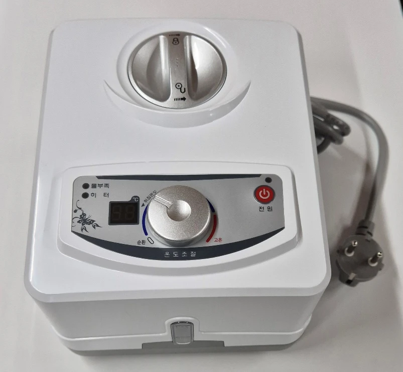
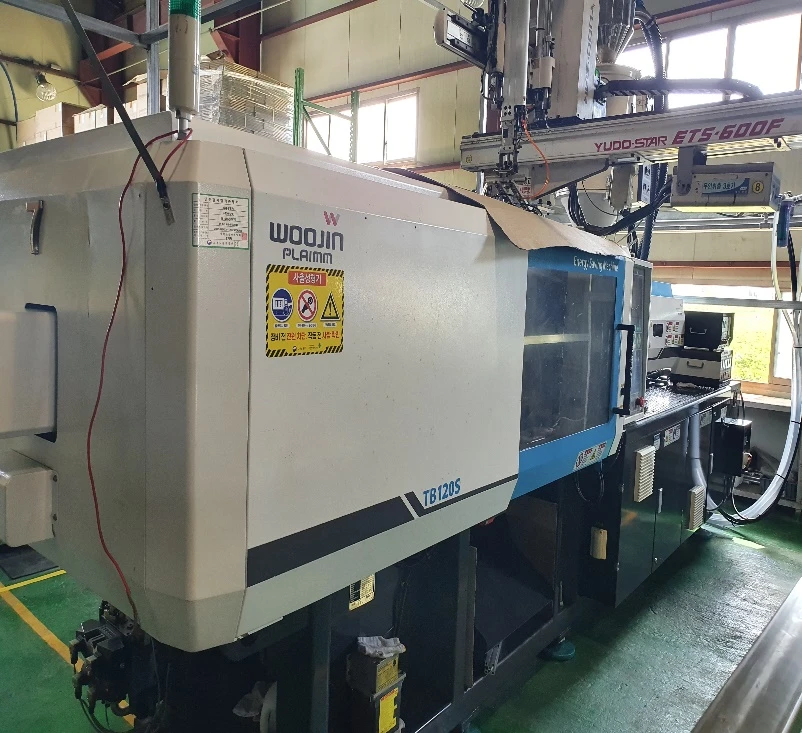
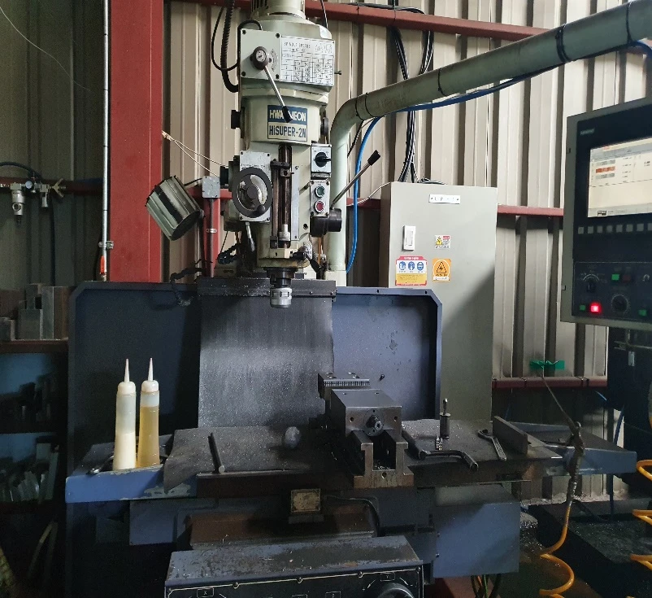

01 / OWN PRODUCT
자체 생산 제품
BLDC 펌프를 사용하는 온수매트 컨트롤러.
생활 속 제품을 제조 기술로 완성합니다.
PRECISION IN EVERY DETAIL
금형 제작부터 플라스틱 사출까지.
고객의 요구에 맞춘 생산 솔루션을 함께 만듭니다.

01 / GREETING
위닝텍은 고객의 신뢰를 바탕으로 성장하는 금형 제작 및 플라스틱 사출 전문기업입니다. 제품의 특성과 고객의 요구사항을 정확하게 파악하고, 정밀한 금형 기술과 안정적인 사출 공정을 바탕으로 고품질 제품을 생산합니다.
100톤~250톤 사출 설비를 운영하며 전자·전기부품, 생활용품 및 의료기기용 플라스틱 부품을 생산합니다. 소량생산부터 대량생산까지 제품의 특성과 고객의 생산 일정에 맞춰 유연하게 대응합니다.
철저한 품질관리와 신속한 납기 대응을 핵심 원칙으로, 지속적인 소통과 기술 개선을 통해 함께 성장하는 협력 관계를 만들어 가겠습니다.
고객이 믿고 맡길 수 있는 든든한 생산 파트너
㈜위닝텍
02 / PRODUCTS & SOLUTIONS
제품 특성에 맞춘 금형과 사출,
고객의 요구에 맞춘 제조 솔루션.

BLDC 펌프를 사용하는 온수매트 컨트롤러.
생활 속 제품을 제조 기술로 완성합니다.

제품의 특성과 요구사항에 맞춘 가공 및 금형 제작. 정밀한 생산의 시작을 함께합니다.
100톤~250톤 사출 설비를 바탕으로 다양한 플라스틱 부품의 생산을 지원합니다.
전자기기 및 전기제품용
플라스틱 부품 사출 생산
다양한 생활용 플라스틱 제품
제품 특성에 맞춘 사출 생산
의료기기용 플라스틱 부품
고객 요구사항에 따른 제품 생산
03 / CAPABILITY
축적된 기술과 제조 경험을 바탕으로
안정적인 생산을 지원합니다.
| 사출 설비 | 100톤~250톤 |
|---|---|
| 생산 방식 | 소량생산 및 대량생산 |
| 주요 분야 | 전자·전기부품, 생활용품, 의료기기용 부품 |
| 제조 경쟁력 | 오랜 제조 경험과 축적된 기술력 |
| 품질관리 | 철저한 공정관리 및 제품 품질 확인 |
| 납기 대응 | 신속한 생산 대응과 납기 준수 노력 |
04 / PARTNERS
지속적인 소통과 안정적인 생산으로 협력 관계를 이어갑니다.
05 / CERTIFICATIONS
QUALITY MANAGEMENT
HEALTH & SAFETY
FACTORY REGISTRATION
06 / COMPANY
정밀한 금형 기술과 안정적인 사출 품질.
고객과 함께 성장하는 제조기업.
07 / LOCATION & CONTACT
황룡면 강변로 441-21
길찾기는 지도에서 위치 보기를 이용해주세요.